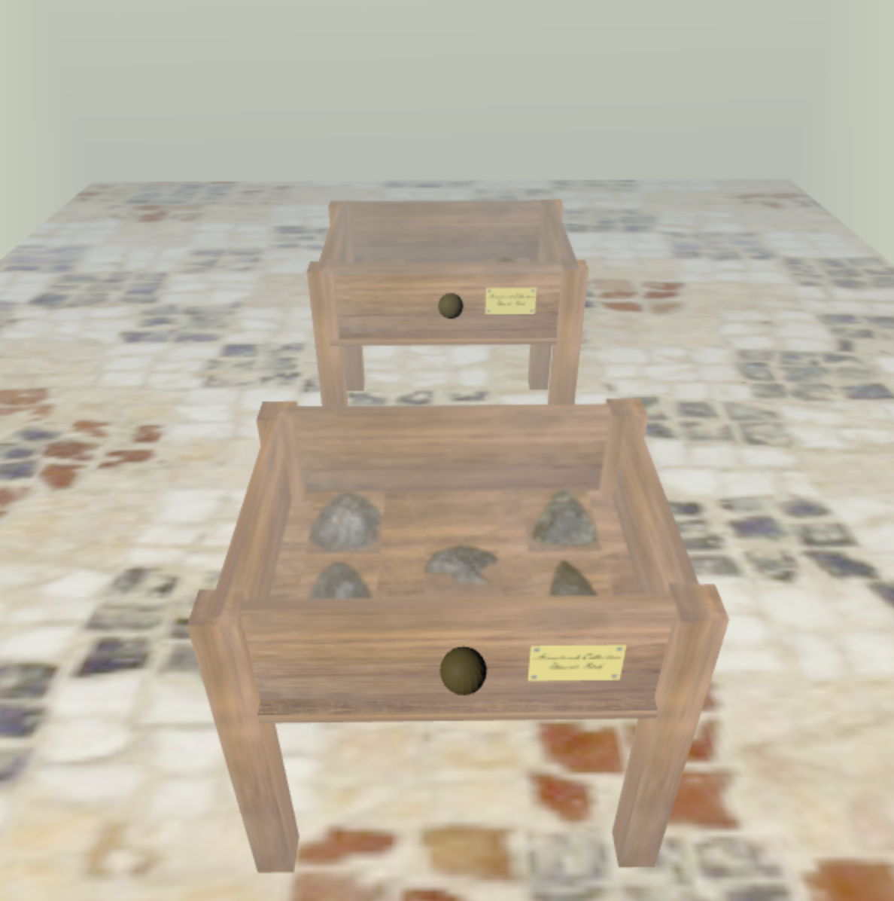
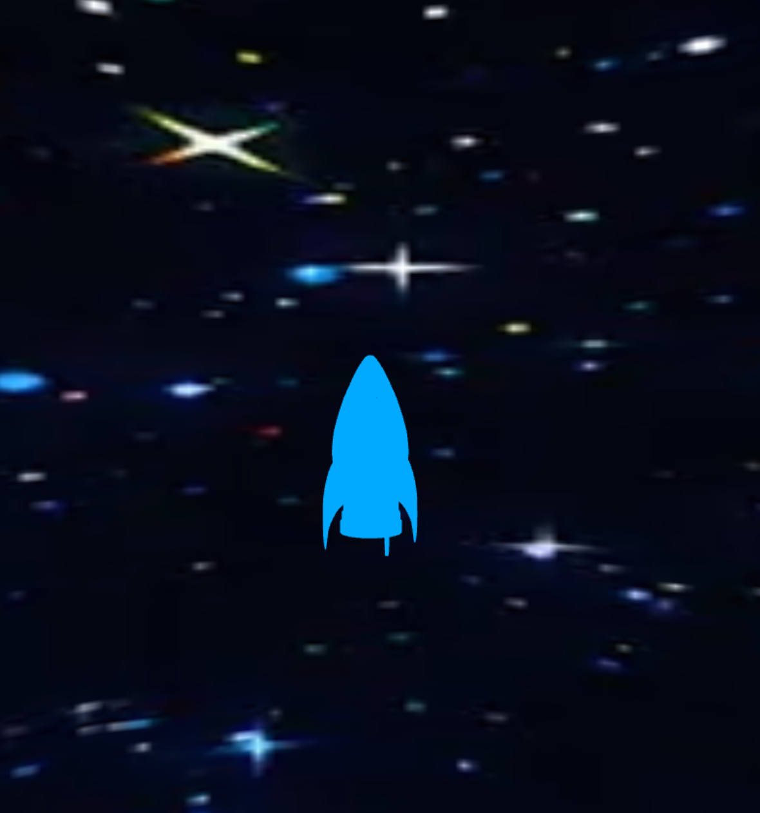
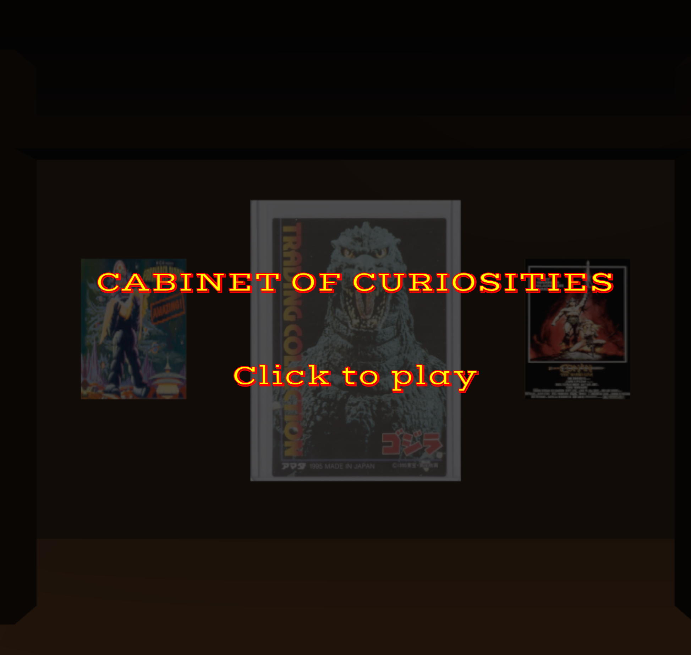
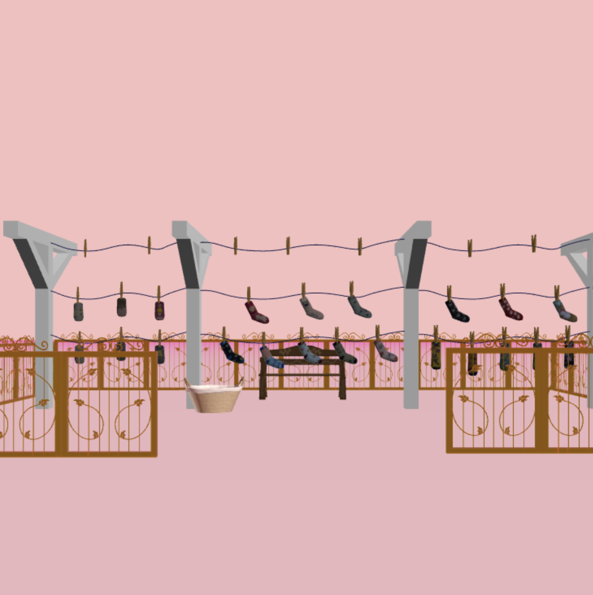

Laney Yuan: Lover's Eye
Artist Statement:
This work explores the transformation of the historical symbol of "lover's eye", which represents a hidden intimate emotion, in a
dreamlike digital environment. Initially, these paintings served as private tokens, extracting a fragment from the body to maintain intimacy while concealing identity. I withdraw these eyes from that
intimate emotion and place them over the floating spheres. In a dreamcore-style setting, these eyes lose their original sense of stability. The soft tones, simplified structures, and ambiguous spatial logic create a feeling of familiarity yet subtle unease. In this environment, the eyes of these lovers are no longer merely expressions of pure love, but a fusion of repetition,
gaze, intimacy, visibility, tenderness, and ominousness.
Her project code can be found here

Yael Rosen: Arrowhead Collection
Artist Statement:
I made cabinets in a museum room that are filled with arrowheads. These arrowheads are images from my boyfriend, Dawson Bird’s, collection.
He searches for arrowheads that date back thousands of years ago, and I have joined him on a few hunts. I thought it would be fun to build a digital world to showcase the cool artifacts.
Her project code can be found here

Reed: Cabinet of Curiousities
Artist Statement:
This space is an interactive navigational cabinet of curiosities inspired by vintage movie posters, media, and pulp science fiction. It's a moody digital room for
viewers to explore this strange collection.
His project code can be found here

Ethan Wansel: Cabinet of Curiousity
Artist Statement:
This space is an interactive navigational cabinet of curiosities inspired by vintage movie posters, media, and pulp science fiction. It's a moody digital room
for viewers to explore this strange collection.
His project code can be found here

Navina Dias: Socks
Artist Statement:
For my cabinet of curiosity, I decided to expand beyond a cabinet to take advantage of the digital medium, and create a world that showcases the items I’ve included. I chose to showcase part of my sock collection out in a backyard, drying in the open space. I decided to explore socks as clothing items by putting them in a clear context with clothespins and a laundry basket. The background is a light pink to compliment the cute aesthetic in my sock collection, but also to showcase the
other-worldy aspect of my cabinet of curiosity. I’ve closed off the rest of the world from the audience through a fence, in order to better focus on the socks while also giving context to the
world they’re located in.
Her project code can be found here